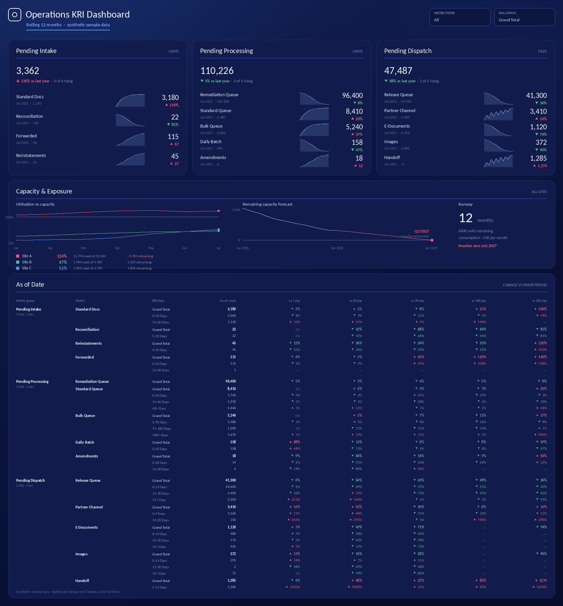
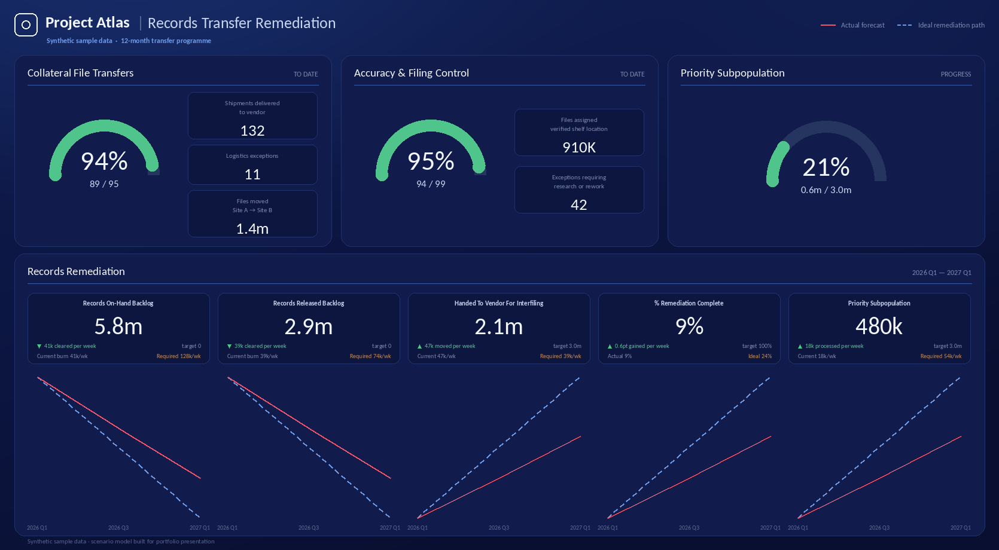

This project shows how operational data can be translated into decision-oriented dashboards that help leaders monitor performance, identify emerging issues, and plan against business targets.
It combines two complementary views: a KPI/KRI dashboard for ongoing performance monitoring and a planning dashboard for evaluating progress, capacity, and whether execution is on track to meet a fixed deadline.
This dashboard was designed to help teams monitor operational performance over time and quickly identify where attention or intervention may be required.
The capacity section compares remaining versus used capacity to help identify operational pressure early. Forecast views extend the analysis by estimating when facilities or processes may reach capacity constraints, allowing teams to plan ahead rather than react after a threshold is reached.

This is a hypothetical dashboard created with dummy data to prepare for a client project before kickoff.
The business question was: given a large backlog and a fixed completion deadline, is the current processing rate sufficient to reach the target — and if not, how much additional throughput would be required?
The goal is not simply to report current performance. The dashboard is designed to support a management decision: whether the team is on track, off track, or needs to adjust capacity and execution to meet the target.

Note: All figures, metric names, and site names shown are synthetic. Visuals are personal reconstructions created for portfolio presentation.
Explore my FinWise product case study, where I developed an activation strategy, defined measurable Aha moments, designed retention mechanics, and used experimentation to connect product behavior with growth and conversion.